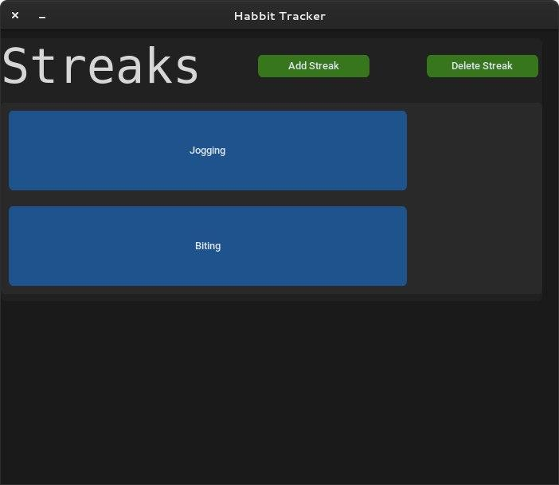
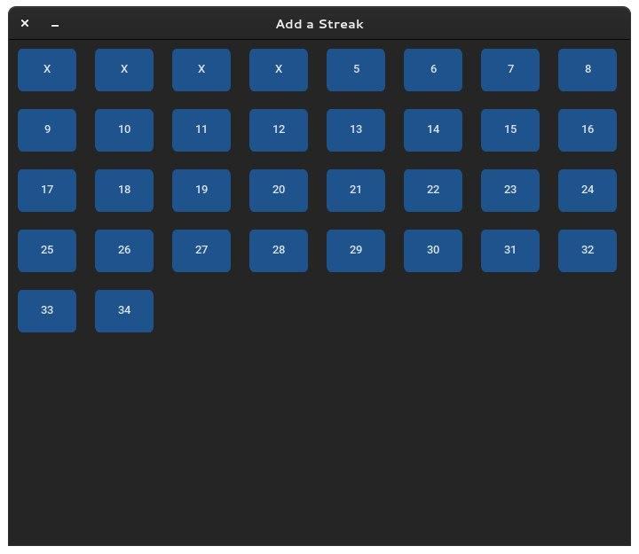
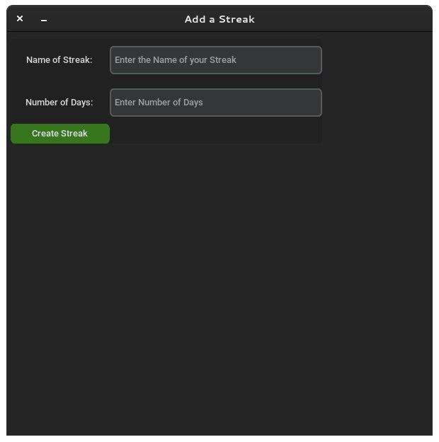

HABIT TRACKER
This desktop application helps you keep track of your habits and also helps you develop new habits by keeping track of how often you do something.
Day crossing page
This is where you cross the days you have successfully finished a habit.
Add Streak
This is where you create a new streak from.
There are more pages I have not shown such as the delete page.